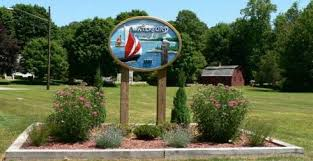

I was born in Waterford, Connecticut. Waterford is a medium sized town located between New London and East Lyme. Waterford is home to the Eugene O'Neill Theater Center, the Crystal Mall, and the Waterford Speedbowl.

My Early Education
I attended Waterford public schools till I was a Sophomore. From there I attended Saint Bernard School, A catholic school in Uncasville for my Junior and Senior year.